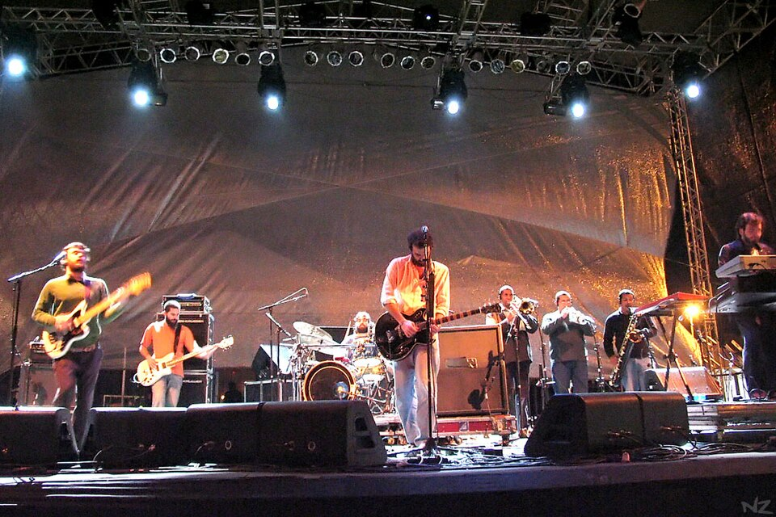

Ventura (2003)
Los Hermanos
Ventura (fortune) is a bit of an indie darling, being voted the 68th best Brazilian album by the Rolling Stone magazine, and 1st (!) best by an audience vote held by the Estadão newspaper—"Clube da Esquina" came second. It was also the first Brazilian album to be fully leaked online before its release.
The album marks a consolidation of the album's sound, with the samba and MPB influences from their previous work now featured front-and-center alongside rock
Los Hermanos in concert
Even with all this praise, however, the album—or better yet, the band as a whole—is perhaps as beloved as it is reviled. You'll hear the nickname "Loser Manos" (Loser Bros) tossed around fairly frequently. This is all to say that, if your Brazilian friends balk or laugh at you for mentioning or even liking this band:
"I warned you!"(It's not that serious...)
00:14
Who dares tell me
Quem se atreve a me dizer
00:16
What samba is made out of?
Do que é feito o samba?
00:18
Who dares tell me?
Quem se atreve a me dizer?
00:21
Who dares tell me
Quem se atreve a me dizer
00:24
What samba is made out of?
Do que é feito o samba?
00:25
Who dares tell me?
Quem se atreve a me dizer?
00:28
No, I don't samba in vain anymore
Não, eu não sambo mais em vão
00:33
My samba has cordão
O meu samba tem cordão
00:37
My block has it without having anything, and even so
O meu bloco tem sem ter e ainda assim
00:42
I samba for two well enough by myself
Sambo bem a dois por mim
00:46
Shaky and alone, but yes, I samba
Bambo e só, mas sambo sim
00:49
I samba for liking someone, for liking
Sambo por gostar de alguém, gostar de
00:53
Till my soul
Me lavra a alma
00:57
Take me away
Me leva embora
01:00
Let there be samba in the chest of who...
Deixa haver samba no peito de quem...
01:04
Who dares tell me
Quem se atreve a me dizer
01:06
What samba is made out of?
Do que é feito o samba?
01:08
Who dares tell me?
Quem se atreve a me dizer?
01:11
Who dares tell me
Quem se atreve a me dizer
01:13
What samba is made out of?
Do que é feito o samba?
01:15
Who dares tell me?
Quem se atreve a me dizer?
01:18
The one that taught me how to tell you
Quem me ensinou a te dizer
01:23
"Come and your suffering will go away"
"Vem que passa o teu sofrer"
01:27
Was one more to hold hands with the two of us
Foi mais um que deu as mãos entre nós dois
01:32
I understand why you were like that after it
Eu entendo o seu depois
01:36
Don't get me wrong here
Não me entenda aqui por mal
01:39
But it was vital for the samba that we spoke of—
Mas pro samba foi vital falar em—
01:43
Lasso my soul
Me laça a alma
01:47
Take me now
Me leva agora
01:50
Since a good samba has neither place nor...
Já que um bom samba não tem lugar nem...
01:53
Don't even dare tell me
Nem se atreva a me dizer
01:56
What samba is made out of
Do que é feito o samba
01:58
Don't even dare tell me
Nem se atreva a me dizer
02:01
Don't even dare tell me
Nem se atreva a me dizer
02:03
What samba is made out of
Do que é feito o samba
02:05
Don't even dare tell me
Nem se atreva a me dizer
02:08
Don't even dare tell me
Nem se atreva a me dizer
02:10
What samba is made out of
Do que é feito o samba
02:12
Don't even dare tell me
Nem se atreva a me dizer
02:15
Don't even dare tell me
Nem se atreva a me dizer
02:17
What samba is made out of
Do que é feito o samba
02:19
Don't even dare tell me
Nem se atreva a me dizer
00:17
Look there! Those that come from the other team
Olha lá! Quem vem do lado oposto
00:22
Come without a love for living
Vem sem gosto de viver
00:26
Look there! Because the brave are
Olha lá! Que os bravos são
00:29
Slaves, safe and sound from suffering
Escravos sãos e salvos de sofrer
00:35
Look there! Those that think that losing
Olha lá! Quem acha que perder
00:39
Means being smaller in life
É ser menor na vida
00:43
Look there! Those that always want victory
Olha lá! Quem sempre quer vitória
00:47
And lose out on the glory of crying
E perde a glória de chorar
00:52
And I, I that no longer wish
Eu que já não quero mais
00:57
To be a winner
Ser um vencedor
01:00
I take my life slowly
Levo a vida devagar
01:03
So there's enough love to go around
Pra não faltar amor
01:09
Look and say you don't
Olha você e diz que não
01:18
Live hiding your heart
Vive a esconder o coração
(instrumental)
01:43
Don't do this, friend
Não faz isso, amigo
01:47
I already know that you
Já se sabe que você
01:51
Are only looking for shelter
Só procura abrigo
01:55
But you don't let anyone see that
Mas não deixa ninguém ver
02:00
Why would that be?
Por que será?
02:19
And I, I that am no longer the type
Eu que já não sou assim
02:24
The type that wins
Muito de ganhar
02:28
I hold the hands around me
Junto as mãos ao meu redor
02:32
I do the most I can
Faço o melhor que sou capaz
02:36
Just to live in peace
Só pra viver em paz
00:19
Come sit here, today I want to tell you
Senta aqui que hoje eu quero te falar
00:25
There's no mystery, no
Não tem mistério, não
00:27
It's just your heart
É só teu coração
00:29
That doesn't let you love
Que não te deixa amar
00:33
You need to react
Você precisa reagir
00:36
Not just give yourself up like that
Não se entregar assim
00:38
Like you don't want anything
Como quem nada quer
00:41
There's no woman, brother, that would enjoy this kind of life
Não há mulher, irmão, que goste desta vida
00:46
She doesn't want to live things for you
Ela não quer viver as coisas por você
00:50
Tell me, where do you come in?
Me diz, cadê você ai?
00:58
Because then, there's not even a pair to share
E ai, não há sequer um par pra dividir
(instrumental)
01:13
Come sit here, hold on, I didn't finish
Senta aqui, espera que eu não terminei
01:18
Where did you run off to
Pra onde é que você foi
01:21
That I can't see you anymore?
Que eu não te vejo mais?
01:23
There's nobody capable
Não há ninguém capaz
01:27
Of being this thing you want to be
De ser isso que você quer
01:30
Of winning the vain fight
Vencer a luta vã
01:32
And coming out champion
E ser o campeão
01:34
Because if it's only in "no"s that you find truth
Pois se é no "não" que se descobre de verdade
01:39
What's left beyond casual things?
O que te sobra além das coisas casuais
01:44
Tell me if you're in peace like this
Me diz se assim está em paz
01:52
Thinking that suffering is loving too much
Achando que sofrer é amar demais
00:12
I found you when I got tired of searching
Eu encontrei-a quando não quis mais procurar
00:21
For my love, and the time it took
O meu amor e o quanto levou
00:28
Was for me to deserve it
Foi pra eu merecer
00:31
Were it a month earlier, I don't know
Antes um mês, eu já não sei
00:35
And even those that see me
E até quem me vê
00:39
Reading the newspaper on the breadline
Lendo jornal na fila do pão
00:45
Know that I found you
Sabe que eu te encontrei
00:49
And no one will tell me that it's too late
E ninguém dirá que é tarde demais
00:55
That it's that different
Que é tão diferente assim
01:01
Of our love
Do nosso amor
01:04
Only we know, dear
A gente é que sabe, pequena
01:09
Ah, come on, tell me what struggle is
Ah, vai, me diz o que é o sufoco
01:16
And I'll show you someone
Que eu te mostro alguém
01:20
That's up for accompanying you
A fim de te acompanhar
01:25
And if it's the case that we go to the beach
E se o caso for de ir à praia
01:29
I'll take this home in a bag
Eu levo essa casa numa sacola
(instrumental)
01:49
I found you and wanted to doubt it
Eu encontrei-a e quis duvidar
01:54
So many cliches, it must not be
Tanto clichê, deve não ser
02:00
You told me
Você me falou
02:03
Not to worry
Pra eu não me preocupar
02:06
To have faith and to see courage in love
Ter fé e ver coragem no amor
02:11
And just seeing you
E só de te ver
02:15
I think of changing
Eu penso em trocar
02:18
My TV for a smaller one so I can take you
A minha TV num jeito de te levar
02:24
Anywhere you want to go
A qualquer lugar que você queira
02:32
And go wherever the wind takes us
E ir onde o vento for
02:37
Because for us two
Que pra nós dois
02:40
Going outside is already
Sair de casa já é
02:46
An adventure
Se aventurar
02:57
Ah, come on, tell me what peace is
Ah, vai, me diz o que é o sossego
03:04
And I'll show you someone
Que eu te mostro alguém
03:07
That's up for accompanying you
A fim de te acompanhar
03:13
And if time comes to take you away
E se o tempo for te levar
03:17
I'll follow the hour, I'll share the ride
Eu sigo essa hora, eu pego carona
03:28
So I can accompany you
Pra te acompanhar
00:19
I bought that ad and nobody saw it
Fiz aquele anúncio e ninguém viu
00:23
I put it nearly everywhere
Pus em quase todo lugar
00:27
The most beautiful photo I've ever taken
A foto mais bonita que eu fiz
00:34
You looking at me
Você olhando pra mim
00:40
From up high on the seventh floor
Alto aqui do sétimo andar
00:45
I saw you, far away
Longe, eu via você
00:47
And the morning light was wasted
E a luz desperdiçada de manhã
00:52
In a cup of coffee
Num copo de café
01:02
God knows that I only wanted to protect you
Deus sabe o que quis foi te proteger
01:10
From the greater danger that is yourself
Do perigo maior, que é você
01:17
And I know it looks like what isn't said
E eu sei que parece o que não se diz
01:23
Your case is the passage of time
O seu caso é o tempo passar
01:31
The one saying it is the doctor
Quem fala é o doutor
01:38
It feels as if it just yesterday I made you
Parece que foi ontem, eu fiz
01:42
That habu tea
Aquele chá de habu
01:45
To cure you from that foot odor flu
Pra te curar da tosse do chulé
01:51
To put you on you feet
Pra te botar de pé
01:57
And it was hard having to take you
E foi difícil ter que te levar
02:03
To that place
Aquele lugar
02:07
How do you say nowadays?
Como é que hoje se diz?
02:12
You didn't want to stay
Você não quis ficar
02:19
And the few that saw you around here
Os poucos que viram você aqui
02:28
Told me you don't do any harm to anyone
Me disseram que mal você não faz
02:34
And if I see you in some random street
E se eu numa esquina qualquer te vir
02:42
Will you run away?
Será que você vai fugir?
02:49
If you will, I'll run
Se você for, eu vou correr
02:57
If you go, I'll go
Se for, eu vou
T/L Note: The "other one" in the title is specifically female.
00:28
Peace, I want peace
Paz, eu quero paz
00:36
I'm tired of being the last one to know of you
Já me cansei de ser a última a saber de ti
00:44
If everyone knows the one that makes you
Se todo mundo sabe quem te faz
00:50
Get home late
Chegar mais tarde
00:52
I'm tired of imagining you with her
Eu já cansei de imaginar você com ela
00:58
Tell me
Diz pra mim
01:00
If it's worth it, love
Se vale a pena, amor
01:04
We used to laugh so much about these divergences of ours
A gente ria tanto desses nossos desencontros
01:09
But you went over the line
Mas você passou do ponto
01:11
And know I don't know anymore
E agora eu já não sei mais
01:15
I want peace
Eu quero paz
01:19
I want to dance with another pair
Quero dançar com outro par
01:23
For a change, love
Pra variar, amor
01:28
I can't pretend I haven't seen them anymore
Não dá mais pra fingir que ainda não vi
01:34
The scars she made
As cicatrizes que ela fez
01:38
If this time
Se dessa vez
01:40
She's the lord over this love
Ela é senhora deste amor
01:44
Then go away, please
Pois vá embora, por favor
01:49
Because it won't take long for this pain
Que não demora pra essa dor
01:53
To bleed over
Sangrar
02:22
I can't pretend I haven't seen them anymore
Não dá mais pra fingir que ainda não vi
02:26
The scars she made
As cicatrizes que ela fez
02:30
If this time
Se dessa vez
02:33
She's the lord over this love
Ela é senhora deste amor
02:37
Then go away, please
Pois vá embora, por favor
02:41
Because it won't take long for this pain
Que não demora pra essa dor
02:49
To bleed over
Sangrar
00:07
Look at that
Olha só
00:10
What a strange guy that's just arrived
Que cara estranho que chegou
00:13
It's like he can't find his place
Parece não achar lugar
00:17
In the body God gave him
No corpo em que Deus lhe encarnou
00:21
Stumbles through each city block
Tropeça a cada quarteirão
00:24
Doesn't measure the strength he already has
Não mede a força que já tem
00:28
Puts forward his heart
Exibe à frente o coração
00:32
That he doesn't share with anyone
Que não divide com ninguém
00:36
Everything is in his reach
Tem tudo sempre às suas mãos
00:39
But he carries the cross a bit further beyond
Mas leva a cruz um pouco além
00:43
Chiseling, like an artisan
Talhando feito um artesão
00:47
The image of a good man
A imagem de um rapaz de bem
00:52
Look there
Olha ali
00:54
Look who's asking for approval
Quem tá pedindo aprovação
00:57
He doesn't even know where to go
Não sabe nem pra onde ir
01:01
Unless someone points it out for him
Se alguém não aponta a direção
01:05
Runs the danger of never finding himself
Periga nunca se encontrar
01:10
Will he ever notice?
Será que ele vai perceber?
01:12
That he always runs away
Que foge sempre do lugar
01:16
Letting his hate hide
Deixando o ódio se esconder
01:19
Maybe, if he never tries again
Talvez, se nunca mais tentar
01:24
To be like the guy on TV
Viver o cara da TV
01:27
That wins the fight without breaking a sweat
Que vence a briga sem suar
01:30
And gets applauded without asking for it
E ganha aplausos sem querer
(instrumental)
01:51
It's part of this game
Faz parte desse jogo
01:55
Telling everyone
Dizer ao mundo todo
01:58
That he only knows his bad fate
Que só conhece o seu quinhão ruim
02:05
It's simple like that
É simples desse jeito
02:10
When you cower down
Quando se encolhe o peito
02:13
And pretend not to have any competition
E finge não haver competição
02:20
It's the solution for those that don't want
É a solução de quem não quer
02:24
To lose what they already have
Perder aquilo que já tem
02:27
And close their doors for what's to come
E fecha a mão pro que há de vir
00:16
I leave everything like this
Deixo tudo assim
00:18
I don't bother seeing
Não me importo em ver
00:20
The years in me
A idade em mim
00:22
I hear what I want to hear
Ouço o que convém
00:27
What I like is what's spent
Eu gosto é do gasto
00:33
I know it's a bother
Sei do incômodo
00:34
And she's in the right
E ela tem razão
00:37
When she comes to say
Quando vem dizer
00:39
That, yes, I do need
Que eu preciso sim
00:43
To be cared for
De todo o cuidado
00:48
And if I were the first
E se eu fosse o primeiro
00:52
To go back and change
A voltar pra mudar
00:57
What I did
O que eu fiz
00:59
Who would I be now?
Quem então agora eu seria?
01:05
Ah, who cares
Ah, tanto faz
01:11
And what wasn't, isn't
E o que não foi não é
01:15
I know that'll come back someday
Eu sei que ainda vou voltar
01:19
But I, who am I?
Mas eu quem será?
(instrumental)
01:42
I leave everything like this
Deixo tudo assim
01:45
I'm not ashamed of seeing
Não me acanho em ver
01:47
Vanity in me
Vaidade em mim
01:49
I say what's in agreement
Eu digo o que condiz
01:53
What I like is the damage
Eu gosto é do estrago
01:59
I know the scandal
Sei do escândalo
02:01
And they are right
E eles têm razão
02:04
When they come to say
Quando vêm dizer
02:06
That I don't know how to measure
Que eu não sei medir
02:09
Both time and fear
Nem tempo e nem medo
02:15
And if I will be the first
E se eu for o primeiro
02:19
To prevent and to be able
A prever e poder
02:23
To give up on what will go wrong
Desistir do que for dar errado
02:32
Ah, wouldn't you know, it's me
Ah, olha se não sou eu
02:38
Who else will decide
Quem mais vai decidir
02:42
What's good for me?
O que é bom pra mim?
02:45
I dismiss your prediction
Dispenso a previsão
02:49
Ah, if what I am
Ah, se o que eu sou
02:55
Is also what I chose to be
É também o que eu escolhi ser
03:03
I accept the condition
Aceito a condição
(instrumental)
03:30
I carry on living like this
Vou levando assim
03:34
Because chance is a friend
Que o acaso é amigo
03:38
Of my heart
Do meu coração
03:42
When I talk to myself
Quando falo comigo
03:46
When I know to listen
Quando eu sei ouvir
This song was written for Marcelo Camelo's mother, painter Ana Camelo
00:00
Lady, look at what I wrote for you
Moça, olha só o que eu te escrevi
00:05
You need strength to dream and to realize
É preciso força pra sonhar e perceber
00:11
That the road goes beyond what you can see
Que a estrada vai além do que se vê
00:29
I know that your loneliness hurts me
Sei que a tua solidão me dói
00:35
And that it's hard to be happy
E que é difícil ser feliz
00:38
Happier than all of us
Mais do que somos todos nós
00:41
You presume heaven
Você supõe o céu
00:43
I know that the wind that bent the flower
Sei que o vento que entortou a flor
00:48
So too passed through our home
Passou também por nosso lar
00:51
And that it was you that sent it away
E foi você quem desviou
00:55
With brushstrokes
Com golpes de pincel
00:57
I know, it's the love that no else sees
Eu sei, é o amor que ninguém mais vê
01:02
Let me see the lady
Deixa eu ver a moça
01:05
Take the one that's yours, fly higher
Toma o teu, voa mais
01:09
And the family block will follow right behind
Que o bloco da família vai atrás
01:14
Place one more on the dinner table
Põe mais um na mesa de jantar
01:18
Because today I'll go visit you
Porque hoje eu vou para aí te ver
01:22
And turn the TV down
E tira o som dessa TV
01:25
So we can talk
Pra gente conversar
01:27
Tell Bamba to play guitar
Diz pro Bamba usar o violão
01:31
Ask Tico to wait for me
Pede pro Tico me esperar
01:35
And warn them that I'll arrive
E avisa que eu só vou chegar
01:39
Riding the last wagon
No último vagão
01:40
It's good to see you smile
É bom te ver sorrir
01:46
Let the lady come forth
Deixa vir a moça
01:49
And I'll go right behind
Que eu também vou atrás
01:52
And the band says: "That's how it's done!"
E a banda diz: "assim é que se faz!"
02:24
I know that your loneliness hurts me
Sei que a tua solidão me dói
02:37
I know that dinner table
Sei aquela mesa de jantar
00:22
I got tired of being like this
Eu cansei de ser assim
00:25
I can't keep carrying on
Não posso mais levar
00:28
If everything's so bad
Se tudo é tão ruim
00:31
Through where should I go?
Por onde eu devo ir?
00:34
Life will carry on
A vida vai seguir
00:37
No one will notice
Ninguém vai reparar
00:39
Here, in this place
Aqui neste lugar
00:42
I think it's over
Eu acho que acabou
00:45
But I'll sing
Mas vou cantar
00:47
So that I don't fall
Pra não cair
00:50
Pretending to be someone
Fingindo ser alguém
00:55
That lives happy
Que vive assim de bem
01:09
I don't know where it went
Eu não sei por onde foi
01:13
All that's left is giving myself up
Só resta eu me entregar
01:16
I'm tired of searching
Cansei de procurar
01:18
For what little is left
O pouco que sobrou
01:22
I had some love
Eu tinha algum amor
01:24
I was better then
Eu era bem melhor
01:27
But everything got stuck in a rut
Mas tudo deu um nó
01:30
And life lost its way
E a vida se perdeu
01:33
If there's God in agony
Se existe Deus em agonia
01:38
Send the cavalry
Manda essa cavalaria
01:43
Because today faith
Que hoje a fé
01:47
Has abandoned me
Me abandonou
00:15
Come see for yourself, where our boat ended up
Veja você, onde é que o barco foi desaguar
00:21
We just wanted love
A gente só queria o amor
00:24
God sometimes seems to forget
Deus parece às vezes se esquecer
00:31
Oh, don't say that, please
Ai, não fala isso, por favor
00:37
This is just the beginning of the end of our lives
Esse é só o começo do fim da nossa vida
00:44
Let the dream come, prepare an avenue
Deixa chegar o sonho, prepara uma avenida
00:51
We're coming through
Que a gente vai passar
01:07
Come see for yourself, where everything came down
Veja você, quando é que tudo foi desabar
01:14
We run and try to hide
A gente corre pra se esconder
01:17
And love, love until the end
E se amar, se amar até o fim
01:23
Not knowing that the end is about to come
Sem saber que o fim já vai chegar
01:29
Let the man knock, I'm tired of running
Deixa o moço bater, que eu cansei da nossa fuga
01:36
I can't see any more reasons for a love so old
Já não vejo motivos pra um amor de tanta rugas
01:43
To not have its place
Não ter o seu lugar
01:53
Open the windows now, let the sun see you
Abre a janela agora, deixa que o Sol te veja
02:00
Just remember that love is so much larger
É só lembrar que o amor é tão maior
02:05
That we are alone in the sky
Que estamos sós no céu
02:08
Open the blinds for me
Abre as cortinas pra mim
02:11
Because I won't hide from anyone
Que eu não me escondo de ninguém
02:15
Love already figured out our place
O amor já desvendou nosso lugar
02:19
And is now in peace
E agora está de bem
02:40
Let the man knock, I'm tired of running
Deixa o moço bater, que eu cansei da nossa fuga
02:46
I can't see any more reasons for a love so old
Já não vejo motivos pra um amor de tantas rugas
02:54
To not have its place
Não ter o seu lugar
03:25
Tell me who is larger than love?
Diz quem é maior que o amor?
03:32
Hug me tight now
Me abraça forte agora
03:36
Our time is coming
Que é chegada a nossa hora
03:39
Come, let's go beyond, they'll say
Vem, vamos além, vão dizer
03:47
That life is fleeting
Que a vida é passageira
03:50
Not noticing that our star
Sem notar que a nossa estrela
03:53
Will fall
Vai cair
00:04
Let me decide if it's too soon or too late
Deixa eu decidir se é cedo ou tarde
00:09
Wait for me to consider
Espere eu considerar
00:15
As if I'll go all fancy like this at will
Vê se eu vou assim chique à vontade
00:19
What's the tone of the place?
Qual o tom do lugar?
00:22
While I thought, you suggested
Enquanto eu penso você sugeriu
00:25
A good reason to delay it all
Um bom motivo pra tudo atrasar
00:29
And it's still early over there
E ainda é cedo pra lá
00:31
Arriving at six, all's well and good
Chegando às seis tá bom demais
00:33
Leave summer for later
Deixa o verão pra mais tarde
00:51
I'm not really up for something new
Não to muito a fim de novidade
00:55
A line for the barstools
Fila em banco de bar
00:59
Consider all the hostility
Considere toda hostilidade
01:03
That exists between our front door and there
Que há da porta pra lá
01:06
While I escaped, you invented
Enquanto eu fujo você inventou
01:10
Some random reason for us to stay
Qualquer desculpa pra gente ficar
01:13
And we won't leave like this
E assim a gente não sai
01:15
This couch's too good
Que esse sofá tá bom demais
01:17
Leave summer for later
Deixa o verão pra mais tarde
(instrumental)
01:49
And I'll say, just between the two of us
E eu digo, cá entre nós
01:53
Leave summer for later
Deixa o verão pra mais tarde
00:24
Open this door
Abre essa porta
00:26
What right do you have to deprive me
Que direito você tem de me privar
00:31
Of this castle that I built
Desse castelo que eu construí
00:34
To protect you from all evil?
Pra te guardar de todo mal?
00:36
Of this universe that I designed
Desse universo que eu desenhei
00:39
For us, for us
Pra nós, pra nós
00:49
Open this door
Abre essa porta
00:51
Stop playing dead
Não se faz de morta
00:53
Tell me what's going on
Diz o que é que foi
00:55
Since I dropped everything for you
Já que eu larguei tudo pra ti
00:58
Since I fenced off everything
Já que eu cerquei tudo ao redor
01:01
Open this door, come on, please
Abre essa porta, vai, por favor
01:05
Because I'm your man, alright?
Que eu sou teu homem, viu?
01:09
Because I'm your man, alright?
Que eu sou teu homem, viu?
01:26
Shut your mouth, because this is nothing
Cala essa boca, que isso é coisa pouca
01:31
Compared to what I went through
Perto do que passei
01:33
I, that washed your sheets
Eu que lavei os teus lençóis
01:35
Stained from all the other passions
Sujos de tantas outras paixões
01:39
And ignored the many, many others
E ignorei as outras muitas, muitas
01:55
Go, call later
Vai, depois liga
01:58
Tell your sister to swing by
Diz pra sua irmã passar
02:01
And I'll send
Que eu vou mandar
02:02
All of your things that are here
Tudo que é seu que tem aqui
02:06
Everything that I don't want to keep
Tudo que eu não quero guardar
02:08
So I can forget, all at once
Que é pra esquecer de uma só vez
02:12
That this castle just held me down, OK?
Que este castelo só me prendeu, viu?
02:16
But the universe has expanded today
Mas o universo hoje se expandiu
02:22
And the door opened from the inside
E aqui de dentro a porta se abriu
00:05
Even when he gets what he wanted
Mesmo quando ele consegue o que ele quis
00:10
When he has it, he doesn't want it anymore
Quando tem já não quer
00:13
Finds something new on the TV
Acha alguma coisa nova na TV
00:16
Something he can't have
O que não pode ter
00:19
And stops liking it
E deixa de gostar
00:22
Lets go of what he already has
Larga mão do que ele já tem
00:27
Starts loving, then
Passa então a amar
00:30
Everything he hasn't earned
Tudo aquilo que não ganhou
00:39
Give me a reason to believe again
Dê motivo pra outra vez acreditar
00:43
On today's waterfall
Na cascata da vez
00:46
That you bought, like this, zero plus ten
Que você comprou assim zero mais dez
00:50
A present for me
Um presente pra mim
00:53
But if I ask
Mas se eu perguntar
00:56
Where did this gift come from
De onde veio esse agrado
01:00
You're going to yell
Você vai gritar
01:03
You say that you're a grown man, I don't know
Diz que é homem feito, sei não
01:08
Oh, please!
Ah faça-me o favor!
01:13
At least tell me what's going on
Diga ao menos o que foi
01:17
And if I didn't explain something to you
E se eu faltei em te explicar
01:20
Tell me that we've always been
Diz que a gente sempre foi
01:23
A pair
Um par
(instrumental)
01:52
You go out on Sunday, you say it's game day
Sai domingo diz que é o dia de jogar
01:56
But what game, I don't know
Mas que jogo eu não sei
01:59
You stay out until Monday morning
Fica até segunda o dia clarear
02:02
And there's no trophy to be seen
E troféu não se vê
02:05
You come in without saying anything
Entra sem falar
02:08
You go out running and come back once more
Sai correndo e volta outra vez
02:12
Without greeting me
Sem cumprimentar
02:15
You don't even look like...
Nem parece aquele...
02:17
I pray, oh, to God in Heaven
Eu rezo, ai Deus do céu
02:20
Or to someone on the ground
Ou alguém no chão
02:22
Tell me what it was
Diga-me o que foi
02:23
That I didn't have
Que eu deixei faltar
02:25
What I can't understand
O que eu não consigo é entender
02:27
Is how a son of mine can be so different
Como é que um filho meu é tão diferente assim
02:34
From me
De mim
02:36
Make me understand
Me faz entender
00:14
Where does this guy's calm come from?
De onde vem a calma daquele cara?
00:19
He doesn't know how to be better, OK?
Ele não sabe ser melhor, viu?
00:26
He doesn't know about being brave
Como não entende de ser valente
00:32
He doesn't know how to be virile
Ele não sabe ser mais viril
00:37
He doesn't know, OK?
Ele não sabe não, viu?
00:42
And sometimes it comes like a chill
E às vezes dá como um frio
00:47
It's the world that's been so hostile
É o mundo que anda hostil
00:52
The whole world is hostile
O mundo todo é hostil
01:03
Where does this flawless attitude come from
De onde vem o jeito tão sem defeito
01:08
The one this man pretends to have?
Que esse rapaz consegue fingir?
01:16
Look at that indecisive smile
Olha esse sorriso tão indeciso
01:20
He's showing off to loneliness
Tá se exibindo pra solidão
01:26
Don't you leave
Não vão embora daqui
01:31
I am what you are
Eu sou o que vocês são
01:35
Don't let go of my hand
Não solta da minha mão
01:40
Don't let go of my hand
Não solta da minha mão
(instrumental)
02:12
I'm not going to change, no
Eu não vou mudar, não
02:20
I'll remain saintly
Eu vou ficar são
02:25
Even if it's alone
Mesmo se for só
02:29
I won't surrender
Não vou ceder
02:32
Yes, God will have it be
Deus vai dar aval sim
02:40
Evil will meet its end
O mal vai ter fim
02:44
And in the end, silent, like this
E no final assim calado
02:48
I know I'll be crowned king of me
Eu sei que vou ser coroado rei de mim